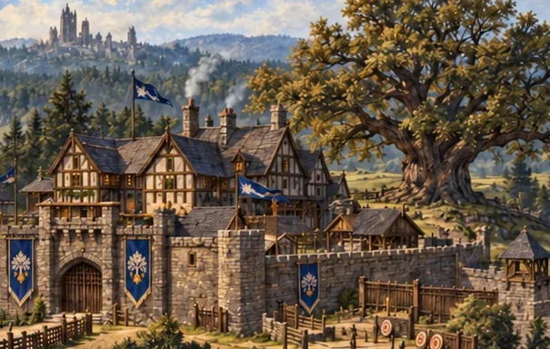
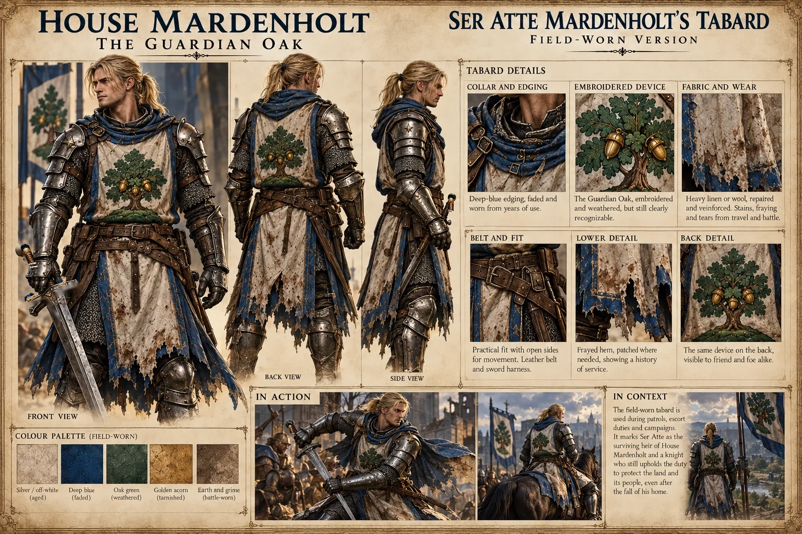
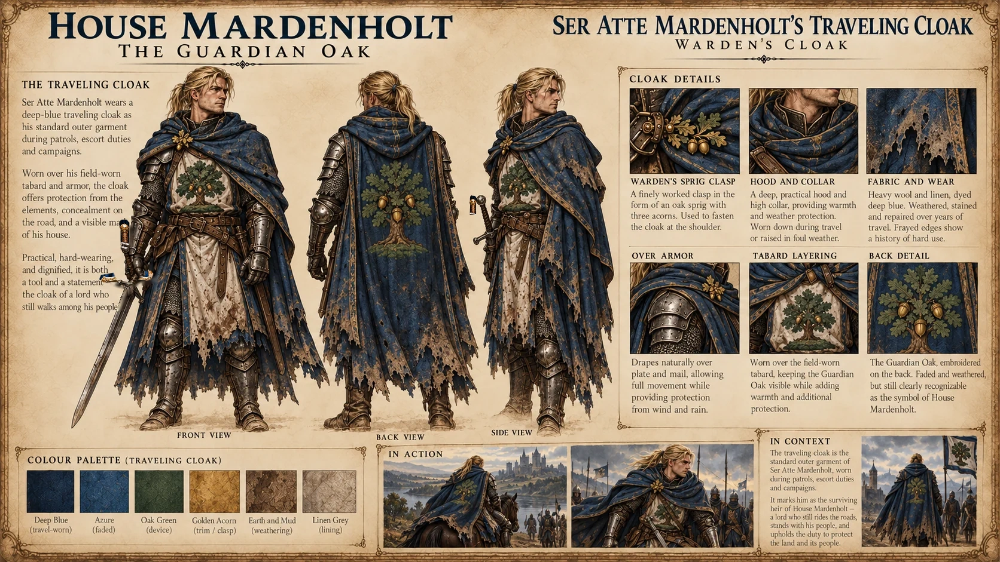
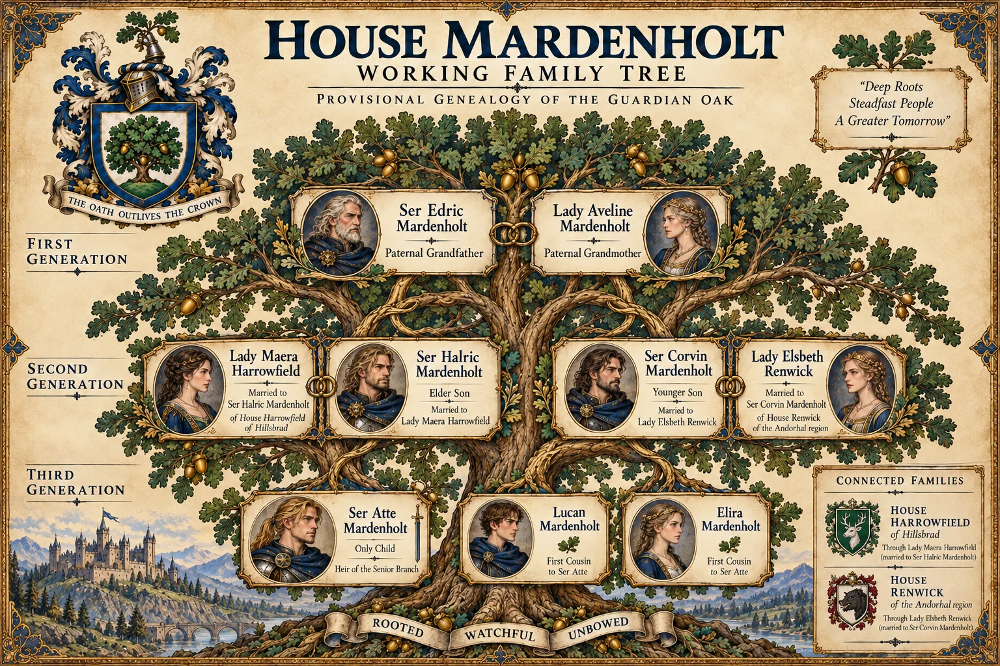
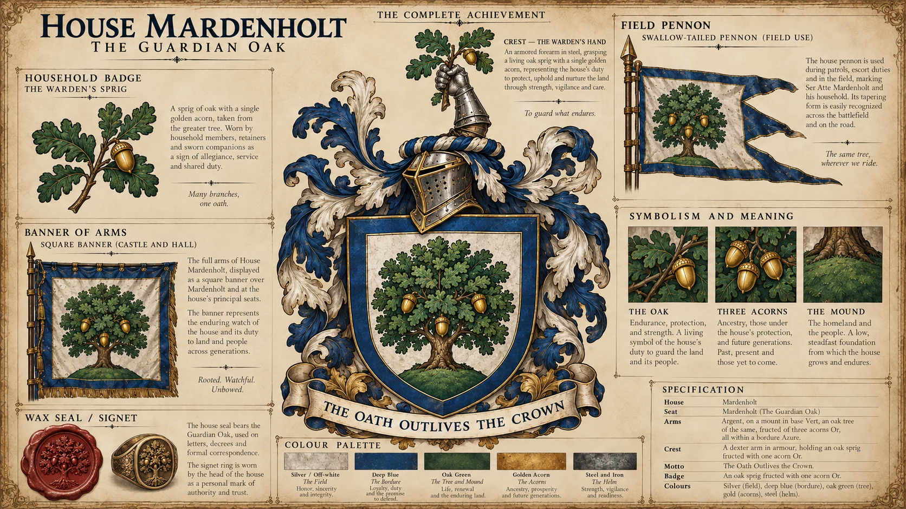
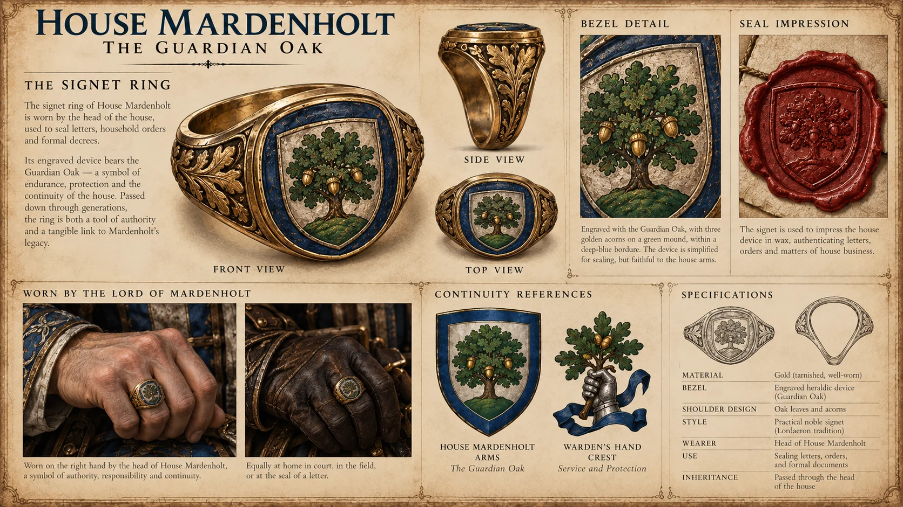
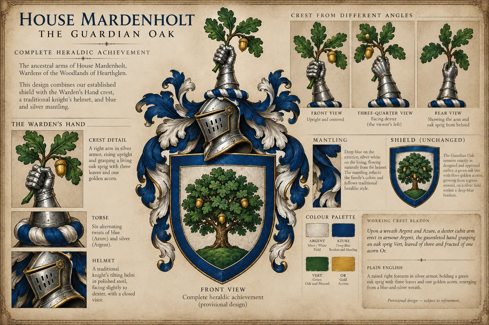
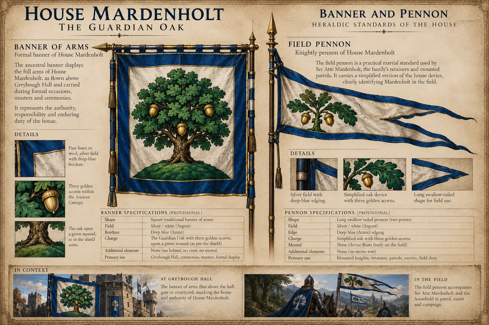
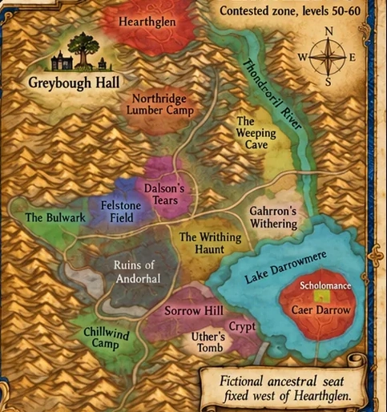

Ser Atte Mardenholt
A knight of Lordaeron without a kingdom, serving the Alliance by choice and bound by the promise of his ancestors.

The story of a fallen house, a wandering knight, and an oath that endures when kingdoms do not.
A knight of Lordaeron without a kingdom, serving the Alliance by choice and bound by the promise of his ancestors.
A small fortified woodland manor west of Hearthglen. The house is fallen, but its ancient oak endures.
Follow Atte’s future journeys: the roads, companions, battles and decisions recorded from actual gameplay.
The origins of a woodland warden's oath.
Lordaeron breaks; Greybough is lost.
Service and sacrifice in Redridge.
Atte's Vanilla story begins.
Human warrior. Son of Lordaeron. Knight without a kingdom.

Atte is honorable and compassionate, a man who believes strength exists to protect those who cannot protect themselves. His courage is genuine; so is his tendency to carry too much responsibility alone.
He begins the game without a legendary inheritance. His equipment, allies, and victories must be earned through your play.

Heavy, weathered deep-blue cloth over field-worn plate and mail. Its subtle Guardian Oak motif, oak-sprig clasp and repaired edges speak of a knight who still bears the colors of his lost home.
The reference above defines the cloak's appearance; it is not a new set of arms or a magical inheritance.
SELECT THE IMAGE TO VIEW ITS DETAILS ↗Only child of Ser Halric Mardenholt and Lady Maera, born Harrowfield. Raised at Greybough Hall among the woodland roads of Hearthglen. His father teaches military responsibility; his mother teaches compassion and stewardship.
His cousins Lucan and Elira, children of his uncle Corvin and aunt Elsbeth, are part of his wider family life.
After the fall of Lordaeron, Atte is envisioned as earning knighthood through service rather than inheriting his father's title. In the working Redridge account he saves nine civilians during an ambush, despite losing supplies and seeing a soldier badly injured.
His next adventures will be recorded from real gameplay. Read the chapters as they are published.
Three generations, three connected houses, and a family scattered by war.

Father of Halric and Corvin.
PROVISIONAL DETAILSMother of Halric and Corvin.
PROVISIONAL DETAILSElder son. Lordaeron warrior and Second War veteran. Died defending fleeing civilians.
ESTABLISHED COREBorn Harrowfield of Hillsbrad. Survived into the crisis; her final fate remains unknown.
ESTABLISHED COREYounger brother, cautious and politically minded. His post-fall allegiance remains unresolved.
FATE PROVISIONALBorn Renwick, from the lands near Andorhal. Mother of Lucan and Elira.
FATE PROVISIONALHeir of the senior Mardenholt line. Age ~28 at Vanilla.
ESTABLISHEDAtte's younger cousin. His whereabouts after the evacuation are unknown.
UNRESOLVED FATEAtte's younger cousin. A possible survivor with an interest in the family's records.
FATE PROVISIONALA minor landed house associated with farms, grain and local trade around Southshore. Atte's mother Maera was born a Harrowfield.
Alistair, Cecily and Cedric Harrowfield are proposed relatives; their exact biographies remain drafts.
A proposed minor landed family from the countryside near Andorhal, connected to Lordaeron's grain and supply routes.
Elsbeth married Corvin Mardenholt. Her parents are intentionally unnamed; the Renwick arms pictured in old artwork are illustrative placeholders.
From a woodland watchman's promise to the lonely road beyond a fallen kingdom.
The First Warden, tentatively named Toman Mardenholt, protects travelers stranded in winter and establishes the tradition behind the family's oath. The specific founder and date have not been approved.
Atte is born to Halric and Maera at Greybough Hall, west of Hearthglen.
Lordaeron is a central participant in the Alliance of Lordaeron. Halric's service as a veteran is original Mardenholt lore.
Atte studies household duty and martial discipline, eventually favoring the two-handed sword. He is not knighted automatically as an heir.
During Lordaeron's collapse, the estate is overrun. Halric dies protecting refugees; Maera's fate remains unknown. Details of the evacuation and the family's separation remain subject to approval.
Atte seeks refuge among his mother's kin in Hillsbrad, travels through the dwarven territories and enters Stormwind's service.
Atte chooses a fighting withdrawal to protect nine civilians. A wagon and supplies are lost; a soldier survives with a lasting injury. Mentor Garran Vale and the later Stormwind knighting remain provisional.
Atte, about 28, begins his Vanilla adventures as a human Alliance Arms Warrior. The next chapters will follow your actual gameplay.
From the quiet paths of Northshire to the forests of Elwynn, Ser Atte Mardenholt found that an oath is carried not by one sword alone. Alongside Sumtingwong Hammer, Thundrus Cheeklapper, and Quilby Picklepocket, he began a new chapter of service, friendship, and shared adventure. Their roads would not always run together, yet the bonds forged upon that first day became part of the House's living chronicle.
After victories against the Defias Brotherhood and travels far beyond Elwynn, Atte came at last to the shattered seat of the kingdom his house had served. In the Ruins of Lordaeron, duty and remembrance met: the stones of the old realm had fallen, but the vow of House Mardenholt endured. He departed not with a restored crown, but with renewed purpose upon the road.
The visual identity of House Mardenholt, preserved from the original heraldic design.
A green oak standing upon a low green mound, with exactly three golden acorns, on a silver field within a plain deep-blue border.

The Guardian Oak on its silver field; three golden acorns; an azure bordure; the Warden's Hand with oak sprig; the family standards and household badge.
The official motto remains: The Oath Outlives the Crown.
SELECT THE IMAGE TO VIEW ITS DETAILS ↗
A tarnished gold signet bearing the full family arms. Used for sealing letters, household orders and formal correspondence, it represents family authority and continuity.
In our working history, Halric entrusts his signet to Atte at the fall of Greybough; the details of that scene remain provisional.
SELECT THE IMAGE TO VIEW ITS DETAILS ↗A silver armored right forearm rises from a blue-and-silver torse and grasps a living oak sprig with three green leaves and one golden acorn. The helmet bears blue-and-silver mantling.
A small green oak sprig with one gold acorn, used as a household badge by retainers on brooches, embroidery or wax seals. Distinct from the full family arms.
The square banner carries the complete Guardian Oak on silver with blue border. The long swallow-tailed field pennon has blue edging, a simplified green oak and three gold acorns, without the mound or writing.
An off-white, mended tabard with the Guardian Oak on front and back, worn beneath a travel-stained blue cloak. A plain family signet bears the oak device; no magical properties or inherited blade are attached.


A modest fortified manor guarding the forest approaches west of Hearthglen.
A family seat, not a royal fortress—stone-and-timber halls, a gatehouse, a training yard and the great tree from which Greybough takes its name.
Set in the wooded hills west to southwest of Hearthglen and north/northwest of Northridge Lumber Camp in the Western Plaguelands region.
Its location is selected for our story, but Greybough Hall does not exist as a canonical in-game landmark. It is separate from Mardenholde Keep in Hearthglen.

Family dinners, petitions, travelers' shelter and quiet celebrations beneath the Guardian Oak banners.
Maps, ledgers, correspondence and reports on the woodland roads.
An ancient oak in the courtyard, symbolizing patience and guardianship.
A modest fortified gate, practice targets, stable yard and household guards.
Your existing illustrated reference sheets collected in one place. Select any artwork to see it larger.
The Travels of Ser Atte Mardenholt. A record of the roads traveled, battles fought, and companions met.
These chronicles will follow Atte's real adventures in WoW Forever. Entries appear here only when their author chooses to publish them.
✦ VISITOR EDITION · READ ONLYAtte's story begins when his creator sets out in Azeroth. Return when the first real adventures have been published.